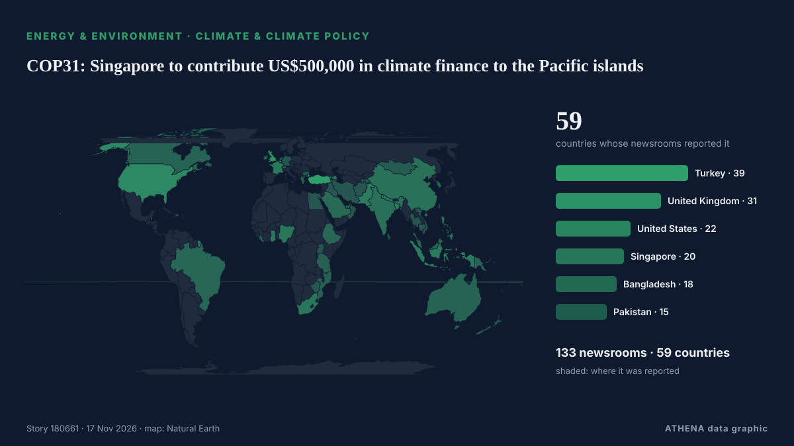

Énergie, ressources et environnement
SponsoriséPrésenté par  Cybernetics and Artificial Intelligence Lab Welcome to the Cybernetics and Artificial Intelligence Laboratory, established at the Department of Business Administration of the National and Kapodistrian University of Athens. The lab is headed by Professor Dimitrios Thomakos. The lab aims to do research that can be published in top venues. Our research uses tools and methods of Artificial Intelligence, and lies in the following areas: - Forecasting - Decision making - Cyber security - Finance We are always looking forward to collaborating with exceptional students!
Cybernetics and Artificial Intelligence Lab Welcome to the Cybernetics and Artificial Intelligence Laboratory, established at the Department of Business Administration of the National and Kapodistrian University of Athens. The lab is headed by Professor Dimitrios Thomakos. The lab aims to do research that can be published in top venues. Our research uses tools and methods of Artificial Intelligence, and lies in the following areas: - Forecasting - Decision making - Cyber security - Finance We are always looking forward to collaborating with exceptional students!
Les titres sont affichés en anglais, tels que publiés.

Climat et politique climatiqueSingapore to contribute US$500,000 in climate finance to the Pacific islands
The vulnerable region aims to raise US$500 million to combat climate change, with US$200 million pledged now. de The Business Times
| 4 nov. | 99 |
|---|---|
| 5 nov. | 96 |
| 6 nov. | 60 |
| 7 nov. | 47 |
| 8 nov. | 55 |
| 9 nov. | 110 |
| 10 nov. | 110 |
| 11 nov. | 114 |
| 12 nov. | 91 |
| 13 nov. | 73 |
| 14 nov. | 41 |
| 15 nov. | 49 |
| 16 nov. | 84 |
| 17 nov. | 32 |
Everllence secures first order for methane dual-fuel 8S50ME-GI Mk10.7 engine
Everllence has announced it has won the first order for its methane dual-fuel, two-stroke 8S50ME-GI Mk10.7 engine configuration. de Bunkerspot
US flexes climate action muscle at COP31 despite Trump no-show
The US government is snubbing UN climate talks in Turkey. de DW English
Minister advocates shared efforts to protect Amazon
Brazil’s Minister of the Environment and Climate Change João Paulo Capobianco called for greater involvement by countries in efforts to protect the Amazon in the face of the challenges posed by… de Agência Brasil (English)
Guinea jails 200 in wildcat gold mining crackdown
A Conakry court has jailed 22 former local officials from the gold-rich northeastern Siguiri region, as well as 200 people accused of illegal mining. de DW English
Malaysia loosens rare earths curbs for France amid upgrade of ties to strategic partnership
The countries will cooperate in areas of defence, trade, energy transition and critical minerals. de The Business Times
ExxonMobil begins oil production at Uaru in Guyana’s Stabroek block
ExxonMobil, via its subsidiary ExxonMobil Guyana, has commenced oil production at Uaru, the fifth development in Guyana’s offshore Stabroek block. de Offshore Technology
NFE expects to resolve Puerto Rico LNG supply dispute after Altamira LNG returns to service
US LNG player New Fortress Energy said Monday that it continues to discuss LNG supply disruptions with Puerto Rico and believes the issue will be resolved after its Fast LNG (FLNG) project off… de LNG Prime
Phl, South Korea opens more talks to deepen ties
Greater opportunities for regional cooperation in maritime security, energy security, artificial intelligence, health, and skills development are set to… de Daily Tribune
French Development Agency Eyes Fresh Investments in Uganda, Targets Water, Energy and Jobs
With more than €1.2 billion committed to Uganda over nearly three decades, AFD is exploring further investments in infrastructure, renewable energy, agricultural value addition and affordable… de Nile Post
Travlos criticises EU stance on shipping decarbonisation talks, warns of fresh IMO deadlock
The president of the Union of Greek Shipowners (UGS), Melina Travlos, has criticised the European Union’s approach to negotiations on shipping decarbonisation, warning of the risk of a fresh… de Naftemporiki (English)
Hyperscale data centers use 2% of US electricity
Study attempts to tally hyperscalers’ energy use and emissions. de Ars Technica
Oil prices fall on expectations of coming supply surplus
Oil prices fell on Monday on expectations of a supply surplus as shipments from the Middle East through the Strait of Hormuz have nearly returned to pre-war levels and the US took steps to support… de MyJoyOnline
Absent officially, unofficially ‘America is all in’ at COP31
ANTALYA, Turkey: The United States officially is absent from COP31. de Oman Observer
Food stockpiling eyed amid El Niño, other crises
MANILA, Philippines — The Philippines plans to propose a regional mechanism for stockpiling food and staple grains, as Southeast Asia braces for the impact of crises, including a potentially severe… de Philippine Daily Inquirer
Oil slips as recovering Mideast exports blunt Gulf tensions
Brent crude futures drop 78 cents, or 0.8%, to $91.66 a barrel. de Express Tribune
Ghalibaf warns dams near US bases are "dual-use" too
Shafaq News- Tehran Iranian parliament speaker Mohammad Bagher Ghalibaf warned on Tuesday that, under the same logic used to describe dams near Iranian missile sites as “dual-use,” dams, ports and… de Shafaq News (English)
Scottish Tories urge Burnham to ‘ignore the growing noise’ and back Rosebank
Reports suggest up to 100 Labour MPs are against the approval of the oil field. de The Irish News (Belfast)
Nepal flood victims' families may wait up to a year for death certificates
KUALA LUMPUR: Families of Malaysians missing in the Nepal floods could face another three to 12 months, or longer, to obtain certificates of presumption of death, Malaysia Solidarity Families in Hope… de New Straits Times
U.S. crude oil declines to $85 a barrel on recovering Middle East exports
Oil prices are falling as forecasts project a surplus in oil in the fourth quarter. de CNBC World
China Turns to Iraqi Oil as US Blockade Disrupts Iranian Supplies
BEIJING, Nov 16 : Chinese independent oil refiners are increasingly turning to Iraqi crude to replace Iranian supplies disrupted by the US naval blockade of Iran, while rising pric... de Arab Times
PACNEWS THREE, 17 NOVEMBER 2026
In this bulletin: 1. PACIFIC — Pacific climate losses extend beyond billions in damage, SPREP report warns2. de Islands Business (Fiji)
Armenian Australians Press Albanese Over Erdogan Meeting at COP31
The Armenian National Committee of Australia has written to Prime Minister Anthony Albanese questioning whether he raised genocide denial, the occupation of Cyprus and Artsakh with Turkish President… de Greek City Times
Dangote Sinotruk rolls out first locally assembled electric trucks
[This Day] Dangote Sinotruk West Africa Limited has rolled out Nigeria's first locally assembled heavy-duty electric truck, marking a historic milestone in the country's automotive industry and… de AllAfrica
Pope Leo urges stop to Amazon deforestation, decries ‘murders’ of tribal leaders
PUCALLPA, Peru, Nov 15 - Pope Leo on Sunday forcefully condemned what he called the exploitation of the Amazon jungle and urged Catholics to oppose \"with perseverance\" the deforestation and… de The Straits Times
Iran’s proxy in Iraq rakes in hundreds of millions through oil smuggling
The smuggling, carried out with accomplices among some security and oil officials, has robbed the government of hundreds of millions of dollars dating back to 2021. de The Straits Times
Energos awards FSRU conversion gig to Hanwha Power
US-based Energos Infrastructure, controlled by asset manager Apollo, has awarded a turnkey contract to Hanwha Power, part of South Korean conglomerate Hanwha, to convert an existing LNG carrier into… de LNG Prime
Climate takes back seat in Spain election despite flood, fires
Maria Laura Bustamante had barely finished furnishing the home she had just bought with her husband in the Spanish town of Paiporta when floods swept through the area, destroying the flat. de The Local Spain
Indonesian president apologises to Singapore, Malaysia for wildfire haze
Prabowo says his government has a 'zero-tolerance policy' for firms that contribute to blazes and pledges strict action. de Al Jazeera English
Adura Starts Gas Production at $2.8B North Sea Gas Field
Adura, a joint venture between Shell and Equinor, has started gas production from its $2.8 million (£2.1 billion) Jackdaw development in the UK North Sea, marking… de Offshore Engineer
Huge waves pummel California coast, forcing closure of popular piers
Large waves up to 50ft flooded southern California streets and prompted evacuation warning near coastal city The California coast was pummeled again on Sunday by huge waves that inundated beaches… de The Guardian
Ugandan Govt Woos Dangote to Invest in Nation’s Oil Refining, Fertiliser, Salt Production Sectors
*’We want him to partner with Uganda in unlocking full potential of our economy,’ officials say The Government of Uganda has approached billionaire industrialist and Africa’s richest man, Alhaji Aliko. de ThisDay (Nigeria)
Macron’s Malaysia visit to focus on diversifying rare earth supplies
This will be Emmanuel Macron's second trip to Malaysia since 2017 but his first as French president. de Free Malaysia Today
Port of Long Beach records lowest emissions per container
The Port of Long Beach’s 2025 emissions inventory shows emissions per container at an all-time low, even as terminals handled a record of nearly 9.9 million TEUs. de Container News
Presidential envoy expresses Korea's commitment to green transformation at COP31
Korea's presidential envoy to the UN climate summit has called for joint international efforts to tackle the climate crisis and expressed the country's commitment to a green transformation, the… de The Korea Times